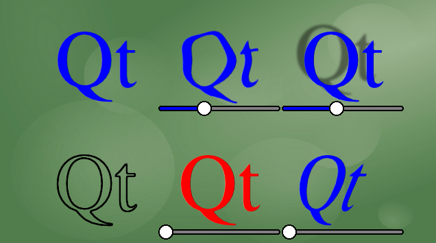

QML Examples - Shader Effects

This is a shader effects example
This example demonstrates a couple of visual effects that you can perform with shaders in QtQuick 2.0
ShaderEffects typically operate on other elements, using a ShaderEffectSource
In the above snippet, theItem is the id of a complex QML element in the file.
ShaderEffects can use this ShaderEffectSource as a texture in their fragment shader.
You can use any custom property on the ShaderEffect in your shader. This makes animated shader code very easy.
ShaderEffects can also have a custom vertext shader. Setting the mesh property on ShaderEffect provides more vertices for you to manipulate, enabling many effects.
Files: